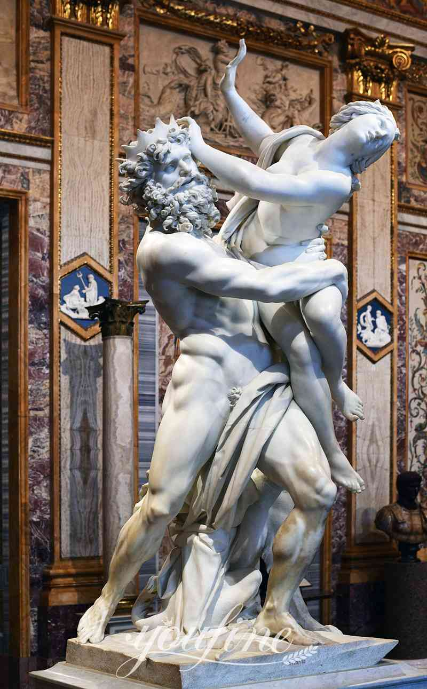
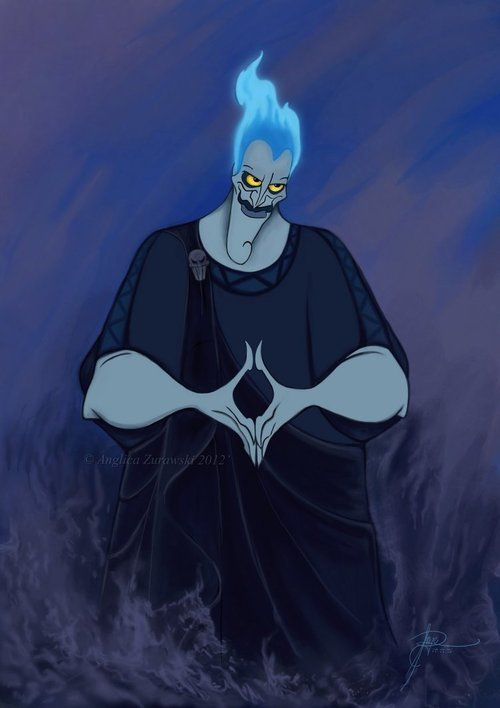
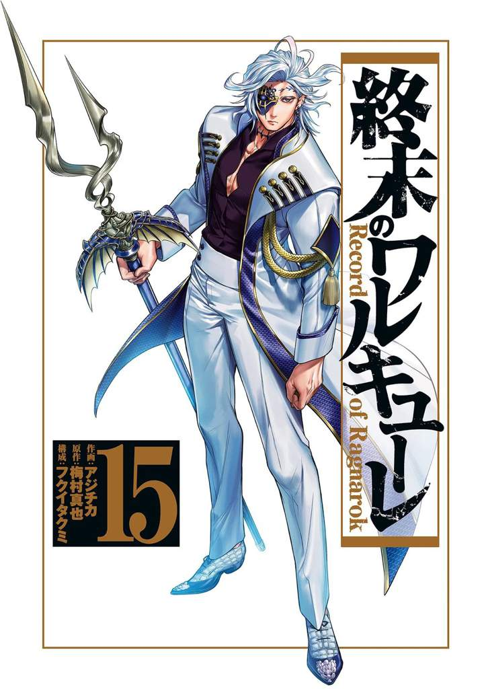
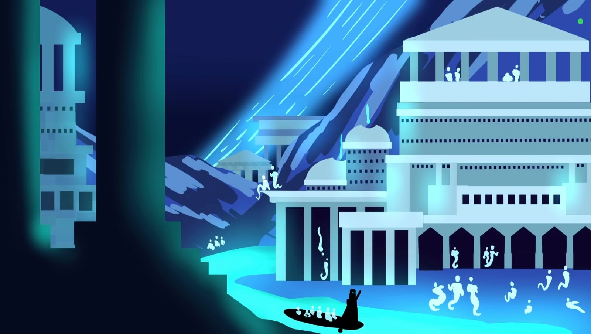
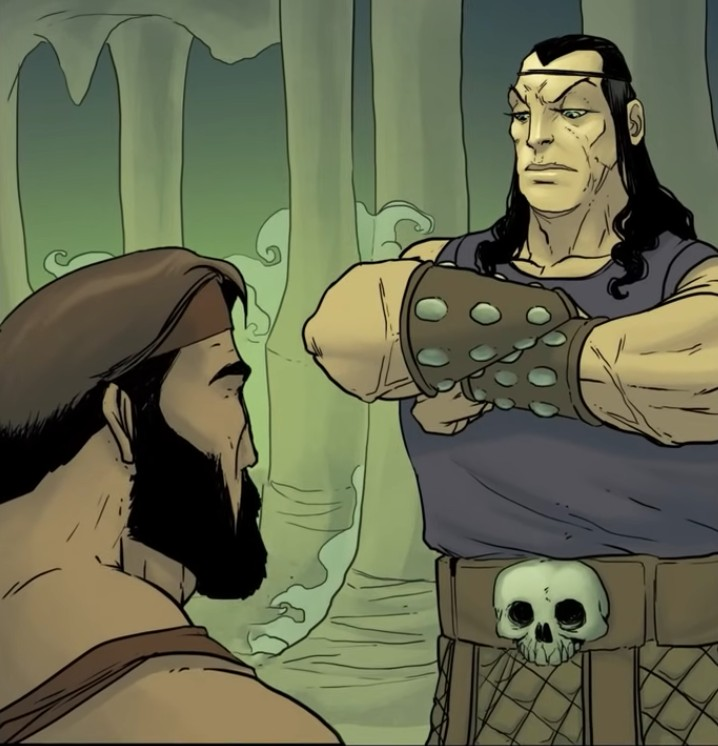
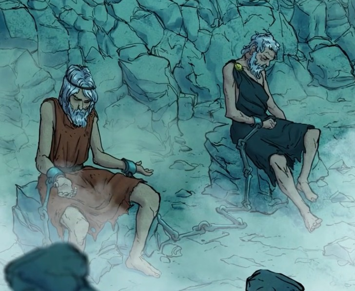

Hades es el dios del Inframundo, incluso también se podría considerar como el dios de la riqueza debido a que la tierra
proporcionaba los nutrientes que permitían crecer las plantas, y sus debidos minerales.

¿Hades era tan malo como lo ponen actualmente?
La respuesta es sencilla: no, no era tan malo como lo ponen.
Esto se debe a que en el Renacimiento relacionaban el Inframundo con el Infierno cristiano, incluso cuando se le conocía como el
dios más cruel, solamente era debido a que no hacía excepciones; nadie podía evitar la muerte o el destino.

Familia de Hades
Hades es hijo mayor de Cronos, haciéndolo hermano de Zeus, Poseidón, Hera, Demeter y Hestia.
Está casado con la diosa Perséfone, hija de Demeter y Zeus.
Zeus
Demeter
Perséfone
Poseidón
Elementos de Hades
Uno de los objetos que recibió Hades por parte de los cíclopes en la Titanomaquia era un casco que le permitía volverse
invisible, habiéndolo prestado una vez a su sobrino Hermes para la Gigantomaquia.
Muchos piensan que el Bidente es uno de los símbolos originales de Hades, siendo actualmente el más famoso del dios, pero no era
un símbolo originario de la antigua Grecia, sino que fue una implementación formada durante el Renacimiento debido a la relación
que formaron con el Infierno, ya que en ese arte se solía poner el Bidente como un instrumento de tortura.

¿Cómo era el reino de Hades?
El Inframundo griego o el Hades es totalmente diferente al infierno en el que muchos solemos pensar, ya que este era un sitio
húmedo y frío, lleno de ríos, siendo el más conocido el río o laguna Estigia, por el cual navega Caronte llevando las almas recién llegadas
para su juicio.

Mitos de Hades
Hades, a pesar de ser un dios poco popular, tuvo diversos mitos, siendo el ejemplo más conocido el rapto de Perséfone, el cual Zeus
permitió para que Hades tuviera una esposa, siendo este el Himno Homérico dedicado a Demeter, madre de Perséfone.
Además de ese mito, ha salido en otros mitos, como en el duodécimo trabajo de Heracles, o en el intento de secuestro de Perséfone del
héroe Teseo y su amigo Pirítoo.
Heracles logró liberar al héroe Teseo de su encarcelamiento y llevarse a Cerbero, cumpliendo la condición de Hades de
domar a Cerbero con las manos desnudas.
Para finalizar, debemos mencionar uno de los castigos más populares: el castigo eterno de Sísifo, impuesto por Hades
por haber sido engañado por este con el fin de huir del Inframundo.


¿Por qué Hades no sale en tantos mitos a comparación de sus hermanos?
Esto se debe a que Hades, al estar relacionado con la muerte, no era una deidad muy popular, siendo así que
no hubiera tantos templos en su honor a comparación de dioses más populares como Atenea, Apolo o Zeus. Además,
en muchos de los mitos donde intervienen varios dioses, el rey del Hades siempre se mantiene neutral, por lo que
no participa en tantos mitos.